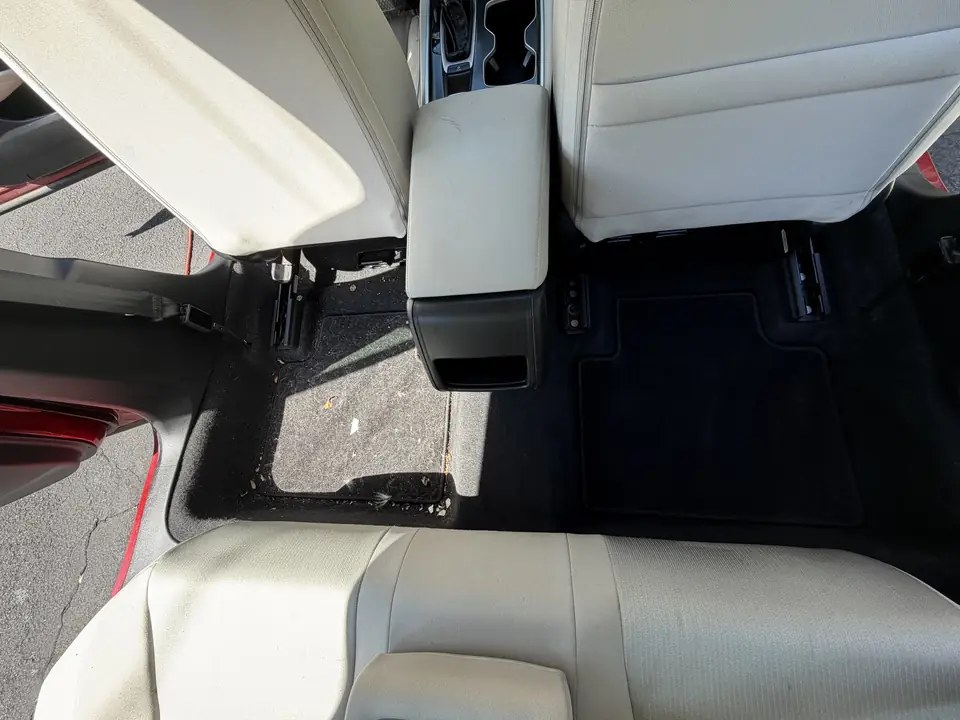
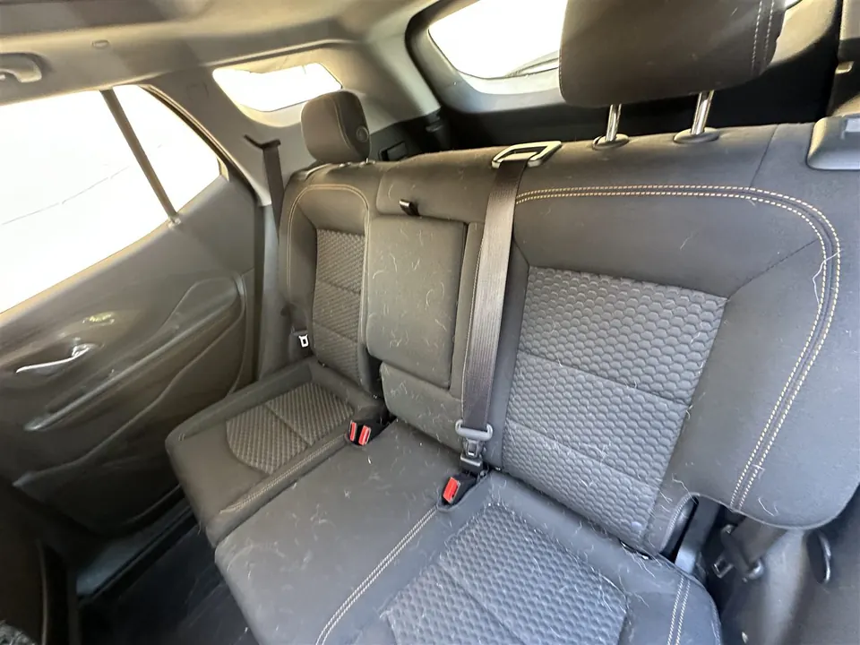
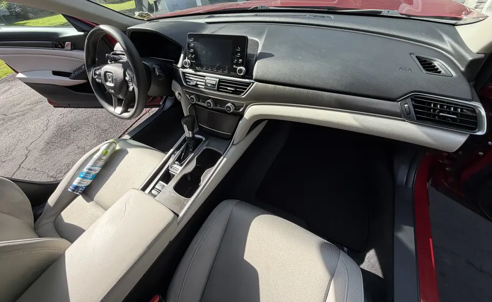

Maintenance
How Often Should You Detail Your Car?
Probably not as often as a monthly package pitch makes it sound. If the car stays clean, you vacuum it once in a while, and it spends most of its time in a garage, you can usually go longer.
Pets, kids, food, long commutes, street parking, and Jersey winter salt? Different story.
For many normally used cars, a deeper detail a few times a year can make sense, with lighter maintenance cleaning in between. There isn't one schedule that works for every car.
The real rule
Condition beats the calendar.If it still looks and smells like a car you want to sit in, you can wait. If it doesn't, it's time — even if it's only been a few weeks.
Okay, but what if the car still looks pretty clean?
Then you probably don't need a deep detail. You look at the carpet and think it doesn't look that bad. Then you slide the seat back and find six months of crumbs. That's the usual fork in the road: maintenance vs. a reset.
You probably need maintenance, not a deep detail, if:
- the carpet is basically clean
- there's only loose crumbs or dust
- the seats aren't stained
- there's no smell that hangs around
- you're mainly trying to keep the car from getting bad
A deeper interior starts making sense when:
- pet hair is embedded in the carpet
- stains keep showing after a normal clean
- the mats have winter salt buildup
- you notice an odor every time you open the door
- it's been a long time since anyone cleaned under the seats

What if it's just pet hair?
Hair sitting on top of the seats is one thing. Hair woven into the carpet is another. That second one is why a well-kept, pet-free car can wait longer than a daily driver that hauls a dog to the park twice a week.

Maintenance clean vs. deep detail
These get called the same word. They're not the same job.
- Maintenance: vacuum, wipe-down, maybe a careful wash. Keeps a decent car decent.
- Deep detail: stains, packed hair, odor in fabric, neglected plastics, paint that needs more than soap — depending on the package.
If you keep up with the first, you can wait longer on the second. If nobody's touched the cabin in a year, one deep visit doesn't magically put you on a forever six-month plan. You reset, then you maintain.

A starting point — not a prescription
If you're commuting every day between North Jersey and the city, the car is seeing more road grime than a garage-kept weekend car. Use the table as a feel, not a contract.
| How the car is used | Interior | Exterior / full |
|---|---|---|
| Daily driver, already kept up | Maintenance as needed; deeper work a few times a year | Gentle washes between fuller exterior visits |
| Kids, pets, food, or odor | Sooner — when hair, crumbs, or smell show up | Follow the paint, not the cabin clock |
| Garage-kept, light miles | Can wait longer if the cabin stays clean | Usually less often than a street-parked car |
| Winter salt, street parking | Mats and carpets after the heavy months | Don't wait until April if wheels and sills are caked |
One winter can put more salt into the mats than months of summer driving. That's not a sales line. That's just January and February around here.
When it actually makes sense to book
If you're ready, check price and availability. A request isn't a confirmed appointment, and no card is required to send it. The difference between a car wash and detailing is the same idea: upkeep vs. a reset.
Questions people actually ask
So how often should I actually detail my car?
There isn't one schedule that works for every car. For many normally used vehicles, a deeper detail a few times a year can make sense, with lighter maintenance cleaning in between. Pets, kids, street parking, and winter salt can shorten that. Look at the car, not the calendar.
Is every six months enough?
Sometimes. If you keep up with vacuums and washes, six months between deeper visits can be plenty. If nobody has touched the cabin, or the mats took a Jersey winter, you may need it sooner. Condition beats the calendar.
How do I know when my car actually needs another detail?
When a normal vacuum doesn't change how it feels. Stains that keep showing, hair packed into carpet, an odor you notice when you open the door, or paint that still feels rough after a wash. If it's just loose crumbs, you probably need maintenance, not a deep detail.
Do kids or pets mean I need detailing more often?
Usually the interior, yes. Crumbs, spills, and hair build faster than road film on the paint. You can still wash the outside on a normal cadence and book interior work sooner.
If I wash it myself, can I wait longer?
Yes — if the washes are gentle and the cabin is actually kept up. Washing the outside doesn't reset carpets, seats, or odors. If you only wash, the interior clock still runs.
Does a basic detail include shampoo?
Not automatically. A vacuum and wipe-down is maintenance. Shampoo and extraction are a different job. That doesn't mean you need shampoo every time — only when the fabric actually needs it.